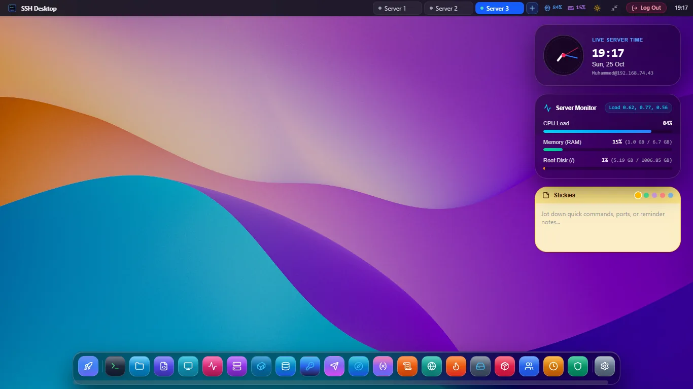

macOS Sonoma Cloud Desktop for Headless Linux
Bring the elegance, spatial focus, and buttery responsiveness of Apple macOS Sonoma to any remote Linux server. Manage files, processes, Docker containers, and databases in unified windowed desktop harmony — with 0% extra server RAM.

Why SSH Desktop Outperforms VNC, RDP & Webmin
Traditional remote desktop solutions turn your cloud server into an overworked display rendering engine. SSH Desktop flips the paradigm entirely.
0 MB Idle Server RAM
No X11, Wayland, or desktop environment installed on your host. UI rendering is 100% computed on your client GPU using WebGL canvas acceleration.
Zero Open Web Ports
Unlike Webmin (port 10000) or Cockpit (port 9090), SSH Desktop communicates exclusively over your existing encrypted SSH port (22). Nothing new to firewall.
Mission Control (Ctrl + F3)
Instant Exposé window overview displaying live miniature thumbnails of every open app, terminal session, and editor buffer with keyboard focus switching.
Dynamic Sonoma Wallpapers
Official high-resolution Apple Sonoma, Sequoia, and Ventura dynamic wallpapers with adaptive time-of-day atmospheric transitions and blur depth.
Remote Desktop Folder
Files stored in ~/Desktop on the server appear directly on your virtual desktop with double-click actions, thumbnail previews, and marquee drag-selection.
Sub-Millisecond UI Latency
Zero pixel streaming lag over slow mobile or international connections. Mouse clicks and window drags happen locally at 120 FPS regardless of ping.
Resource Overhead vs Legacy Solutions
Comparing server host overhead on a standard Ubuntu 24.04 LTS cloud instance.
| Solution | SSH Desktop | XRDP + XFCE4 | VNC Server | Cockpit Console |
|---|---|---|---|---|
| Idle Server RAM | 0 MB (0% Extra) | 840 MB | 620 MB | 128 MB |
| Open Firewall Ports | Port 22 Only | Port 3389 | Port 5901 | Port 9090 |
| Server Host Installation | Agentless (Pure SSH) | Heavy GUI Packages | X11 + VNC Daemon | System Daemon |
| Bandwidth Usage (Idle) | 0 KB/s | 45 KB/s | 38 KB/s | 12 KB/s |
| macOS Sonoma UX | Authentic Native | Legacy 90s XFCE | Unaccelerated X11 | Basic Web Forms |
Frequently Asked Questions
Everything you need to know about the macOS Sonoma cloud desktop shell.
Do I need to install any software on my Linux server?
No! In client desktop mode, SSH Desktop connects via pure SSH2 and SFTP. Nothing is installed on your server, and no background daemons are left running. In optional CLI server mode, a single standalone Go binary provides a browser-accessible desktop.
Can I customize the wallpapers and theme colors?
Yes. You can switch between official 4K Apple macOS wallpapers (Sonoma, Sequoia, Ventura, Monterey, Big Sur, and Dark Mode variants) or drag your own custom images directly into the wallpaper picker.
What keyboard shortcuts are supported?
Full macOS keybindings are supported: Ctrl + F3 for Mission Control Exposé, Alt + Tab for Application Switcher, Ctrl + K for Global Search & Command Palette, and Ctrl + ` for quick drop-down terminal.